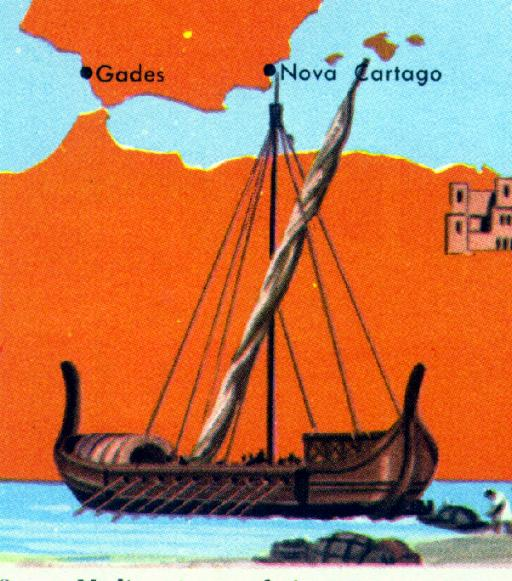
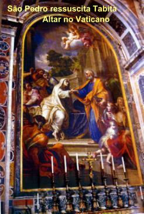
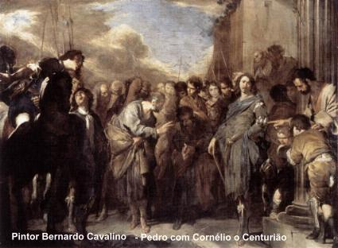
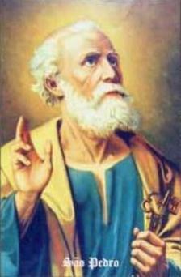
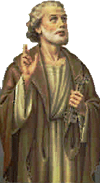

VIAGENS EVANGELIZADORAS
Os Apóstolos ampliando o campo de atuação,
percorreram a Samaria, a Peréia, 
Pedro, na sua caminhada evangelizadora chegou em Lida. Lá foi convidado a visitar um paralítico e rezar por ele. Entrou na casa e encontrou Enéias, que estava paralítico há 8 anos prostrado num leito. Disse-lhe: "Enéias, JESUS CRISTO te restitui à saúde: levanta-te e arruma a tua cama.? (At 9,34) Ele se levantou imediatamente e a alegria foi geral, todos sorriam e louvavam a DEUS ao mesmo tempo em que abraçavam e beijavam as mãos do Apóstolo. Os habitantes de Lida e da planície de Saron que conheciam Enéias, ficaram emocionados e se converteram ao SENHOR.
EM JOPE

Pedro partiu imediatamente. Havia em Jope uma mulher chamada Tabita, que praticava boas obras e dava esmolas com muita generosidade. Nas últimas semanas, ficou doente e morreu. Assim que ele chegou, levaram-no à sala superior onde ela estava. As viúvas choravam e mostravam as lindas túnicas e os vestidos feitos por Tabita. Pedro mandou que todos saíssem. Ajoelhou e rezou. Depois de um momento, de pé diante do corpo falou: "Tabita, levanta-te". Ela abriu os olhos, fixou-os em Pedro e silenciosamente sentou-se na cama. Pedro estendeu-lhe a mão e levantou-a. Chamou os parentes, amigos e as viúvas: venham! Diante de Tabita viva, risos e choro se multiplicaram num imenso júbilo, ao mesmo tempo em que de joelhos piedosamente agradeceram a DEUS aquele maravilhoso milagre. (At 9,36-42)
CORNÉLIO, O CENTURIÃO
Vivia em Cesaréia
o centurião Cornélio, servidor do Império Romano. Embora 
Cornélio enviou dois homens e um soldado a procura do Apóstolo em Jope. Simão Pedro rezava no terraço da casa, aguardando o almoço, quando entrou em êxtase. Viu o Céu aberto e uma grande toalha sustentada pelas quatro pontas, descer para a Terra. Dentro havia todos os quadrúpedes, répteis e aves do Céu. Uma voz lhe disse: "Levanta-te, Pedro, imola e come.? Pedro respondeu: "De modo nenhum SENHOR! Porque jamais comi coisa profana e impura!? A voz replicou: "Não chames impuro o que DEUS declarou puro.? Repetiu isto por três vezes, depois a toalha foi recolhida ao Céu. (At 10,7-16)

Chegando em Cesaréia, Cornélio veio a seu encontro e prostrou-se a seus pés. Pedro erguendo-o falou: "Levanta-te. Eu também sou apenas um homem.? (At 10,26) E entrando na casa dele, havia muitas pessoas reunidas. Pedro falou: "Vocês sabem que pela lei judaica, é proibido um judeu relacionar-se com estrangeiros (pagãos) ou entrar na casa deles. DEUS porém, acaba de me mostrar que a nenhum homem se deve chamar de profano ou impuro. Por isso, vim sem hesitar, logo que fui chamado. Mas, porque motivo me chamastes?? Cornélio, contou-lhe a Aparição do Anjo e depois disse:
"Imediatamente
mandei chamar-te, e fizeste bem em vir. Agora, portanto, estamos todos diante de
ti para ouvir o que foi prescrito por DEUS.? (At 10,33) 
Pedro tomou a palavra e falou: "Verifico que DEUS não faz acepção de pessoas, mas que, em qualquer nação, quem O teme e pratica a justiça, lhe é agradável.? (At 10,34-35) A seguir falou sobre a admirável Obra de JESUS, que veio para salvar a humanidade e entre nós, só fez o bem e foi morto numa Cruz, como um abominável malfeitor. Todavia, DEUS o ressuscitou e ELE se manifestou as suas testemunhas, provando que estava com o PAI ETERNO e que seus ensinamentos eram para a Vida Eterna. Ordenou que anunciássemos a sua Boa Nova ao povo, em todas as regiões. Todos os profetas dão testemunho de que quem NELE crer, receberá por seu nome, a remissão dos pecados. E ali, enquanto Pedro falava, o ESPÍRITO SANTO desceu sobre todos os presentes. Os fieis circuncisos que acompanharam Pedro ficaram admirados ao ver, que o dom do ESPÍRITO SANTO estava sendo derramado também sobre os gentios (pagãos). Pois ouviam aquelas pessoas simples e de pouca instrução, falar em línguas e glorificar a DEUS. Então disse Pedro: "Pode-se, porventura, recusar a água do Batismo a esses que, como nós, receberam o ESPÍRITO SANTO?? (At 10,47)
E ordenou que todos fossem batizados.